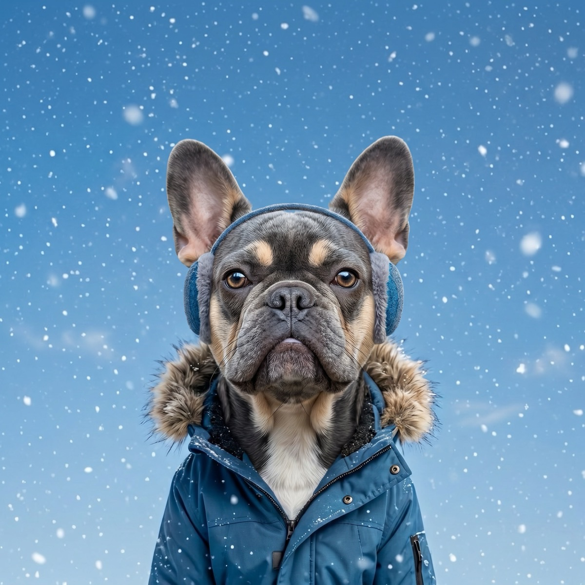

Best Dog Winter Coats and Jackets for Cold Weather
Not every dog needs a winter coat, but plenty do. Short-haired and thin-coated breeds, small and toy dogs, lean sighthounds like Greyhounds and Whippets, puppies, and senior dogs all struggle to hold their own body heat once the temperature drops. For those dogs, a good coat is the difference between a brisk, happy walk and a shivering rush back to the door. The right time to add one is when the cold or wind chill starts to bite, when your dog stiffens up, lifts their paws, or just refuses to go out. Here are the winter coats and jackets we would actually buy.
WeatherPets is a participant in the Amazon Services LLC Associates Program. As an Amazon Associate we earn from qualifying purchases. Our picks are chosen independently, and buying through our links costs you nothing extra.
A coat is not just for looks. The American Kennel Club notes that small, toy, and short-haired breeds like Chihuahuas and French Bulldogs cannot easily generate and hold enough body heat, and that hairless breeds, lean short-haired dogs like Greyhounds, and seniors with thinner reserves all benefit from a layer in the cold. A coat is one of the simplest ways to keep those dogs comfortable when the mercury falls.
How we picked
We leaned on tested editorial roundups and long-run owner reviews, then judged each coat on the things that matter once it is genuinely cold: warmth (real insulation, not just a thin shell), coverage of the back, chest, and belly where heat escapes fastest, waterproofing for snow and slush, a fit that stays put without pinching the legs or chest, and harness or leash access so you do not have to choose between staying warm and staying secured. Value matters too, since the best coat is the one you will actually put on your dog every cold morning. We are not quoting prices or star ratings here, because those drift; we are describing how each one performs and who it suits.
1. Ruffwear Powder Hound Insulated Dog Jacket
The best all-around pick for active dogs in real cold.
This is the coat reviewers keep reaching for when the goal is warmth without bulk. It is a hybrid insulated softshell: a synthetic-fill core for heat with stretchy StormSleeve panels that let your dog move freely on a hike or a long walk. It wraps the belly, chest, and back, uses a weather-resistant shell that sheds dry snow well, and adds reflective trim plus a light loop for low-light safety. The tradeoff is that it is built for dry cold rather than a soaking downpour, and some testers find it runs a touch short in the rear, so measure carefully and size up if your dog is between sizes.
2. Carhartt Firm Duck Insulated Dog Chore Coat
Best for big breeds and rugged, working-dog wear.
If your dog is large, hard on gear, or spends real time outdoors in cold wind, this is the tank of the group. It uses a firm-hand, water-repellent duck-canvas shell over a quilted polyester-batting liner, with a corduroy collar for comfort and neck-and-chest tabs for quick on and off. It scales up to XL with a chest girth to roughly 45 inches, so it actually fits broad-chested dogs. The tradeoffs: the heavy canvas build is more weight than a small or thin-coated dog needs, and the manufacturer notes the fabric contains PFAS, so it is best matched to a sturdy outdoor dog rather than a tiny indoor one.
3. Gooby Padded Vest Dog Jacket
Best for small and thin-coated dogs.
For the little dogs that need a coat the most, this padded, fleece-lined zip-up vest is an easy win. It is water resistant, traps a surprising amount of warmth for its weight, and runs down to X-Small, so it suits Chihuahuas, small terriers, and other dogs that a bulky coat would swamp. A dual D-ring leash attachment means you can clip on without a separate harness on quick trips outside. The tradeoff is that it is a vest, not a full storm coat: it covers the back and chest well but leaves the lower belly more exposed, so for deep snow or sleet a thin-coated dog may want fuller coverage.
4. Kuoser Reversible Waterproof Dog Winter Coat
Best budget pick for everyday cold, damp walks.
If you just want something warm and weatherproof without spending much, this reversible coat is the easy answer. It pairs a windproof, waterproof outer shell with a double fleece lining, adds a reflective strip for visibility, and uses adjustable hook-and-loop closures at the neck and belly so it goes on fast. It comes in a wide size range and flips for two looks. The tradeoff is that a value coat will not match the technical fit or the long-haul durability of the Ruffwear or the Carhartt, so check the size chart closely and expect to replace it sooner if your dog is rough on clothes.
5. Gooby Sports Vest Dog Jacket
Best for dark winter walks where visibility matters.
Winter means more walks in the dark, and this fleece-lined sports vest is built around being seen. It adds reflective detailing across the body, fastens with a simple hook-and-loop closure, and has a back D-ring so you can clip a leash without a separate harness. It is sized for small to medium dogs and slips on quickly. The tradeoff is that it is a lighter layer than a full insulated coat, so it shines for crisp, dry evening walks rather than the deepest cold; for a hard freeze, pair it with a warmer pick or step up to one of the insulated coats above.

What to look for in a dog winter coat
Warmth and coverage. For genuine cold, look for real insulation and a cut that wraps the chest and belly, not just a thin panel over the back. That is where a dog loses heat fastest.
Waterproofing. Snow and slush soak a coat from below. A water-resistant or waterproof shell keeps the insulation working; a coat that wets out turns cold and heavy.
Fit. Measure your dog's back length (from the base of the neck to the base of the tail) and chest girth, then match the size chart. The coat should stay put without pinching the legs or chest, and your dog should be able to walk, sit, and squat freely.
Harness access. A back leash slit or a built-in D-ring lets you keep your dog secured without fighting the coat, which matters most on icy footing.
Which dogs do not need one. Plenty of dogs are built for winter and a coat just gets in the way. The AKC points out that thick double-coated breeds like Siberian Huskies, Alaskan Malamutes, Newfoundlands, Saint Bernards, and Bernese Mountain Dogs were bred to insulate themselves, so a healthy, acclimated dog of that type usually does better without one. If your dog has a heavy coat, runs warm, and is happy in the snow, you can skip it.
For the full picture, the American Kennel Club's guidance on whether your dog needs a winter coat and the AVMA's cold weather safety tips both stress watching the actual conditions and your individual dog rather than the calendar. If you are unsure, your veterinarian can weigh in on your dog's breed, age, and health.
Timing helps too. WeatherPets shows you the day's low and runs a Live Activity that tracks conditions in real time, so you can see a cold snap coming, grab the coat, and time the walk for the warmest part of the day instead of getting caught out in the worst of it.
Meet your new weather reporter
WeatherPets turns your real pet into your personal forecaster, right on your iPhone.